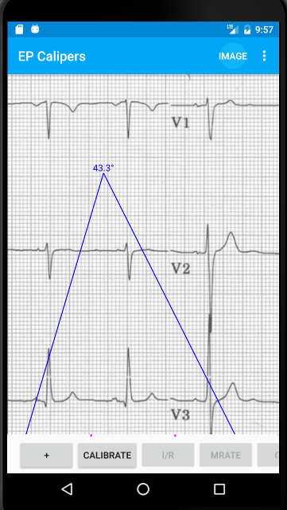
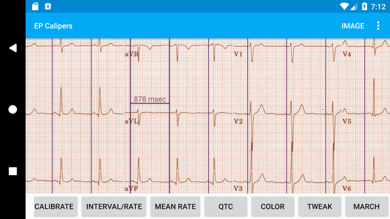
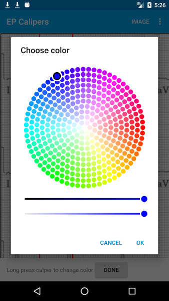
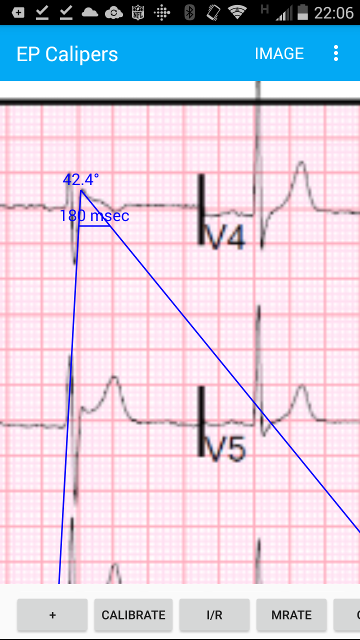

Table of Contents
- You're on call, again…
- Electronic Calipers
- Quick start
- Loading an image
- Adjusting the image
- Locking the image
- Sample ECG
- Exiting Image mode
- Types of calipers
- Moving calipers
- Making measurements
- Adding and deleting calipers
- Selecting a caliper
- Changing caliper colors
- Calibration
- Changing calibration
- Interval/Rate
- Mean rate and interval calculation
- QTc calculation
- Brugadometer
- Settings
- Limitations
- Acknowledgments
You're on call, again…
It's 2 AM and the phone rings. It's a nurse on the cardiac unit. Mr. Smith is due to get his antiarrhythmic drug (who comes up with these crazy drug schedules?) and his ECG has a borderline prolonged QTc interval, at least according to the computer. She's not sure if it is safe to give the drug. The nurse wants to send you the ECG.
You open the ECG on your phone. You look at the QT interval. You're not sure about the computer's measurement. You really should double check it. You start counting little boxes. You pull out the (t)rusty old pair of mechanical calipers some drug rep gave you many years ago, back when such largesse was still legal. You think to yourself: I live in a digital age. Am I really making measurements on my smart phone with a dumb pair of calipers?
Electronic Calipers
EP Calipers provides electronic calipers for measuring intervals on images of electrocardiograms (ECGs) or electrophysiologic recordings. In the electrophysiology lab electronic calipers are included as part of the recording system. EP Calipers is intended to provide similar electronic calipers for use on your Android phone or tablet. The electronic calipers of EP Calipers are more accurate, easier to use, and less dangerous than mechanical calipers (they don't have sharp points!).
Quick start
When EP Calipers starts, a sample ECG and a time caliper are loaded. Move the caliper around by touching the caliper's crossbar and dragging it with your finger. Expand and contract the caliper by putting your finger on either vertical bar and dragging. Pinch and zoom the underlying ECG image as needed. Drag the image around with your finger. Double-tap the ECG image to rapidly zoom in. The remainder of these instructions will go over how to load ECG images, add and delete calipers, calibrate the calipers and make advanced measurements like the corrected QT interval.
Loading an image

Figure 1: Image button at top right of screen
Use the Image button at the top right of the screen to switch to Image mode. The Image menu will appear at the bottom of your screen.
Figure 2: Image menu
With this menu you can load and adjust an ECG image. There are several ways to load an ECG image, as described next.
Take a photo of an ECG
Touch the Camera button to take a photo of an ECG tracing and load it into the app. Note that images captured this way are not saved in the photos collection of the device. It's best to use this option to make a quick measurement when you don't need to save the image. If you want to save the image use your camera app to take the picture and load the image into EP Calipers from your photo gallery as described next.
Select a photo from your photo gallery
Touch Select to chose an image that is already saved on your device in your photos collection, for example an image file attached to an email that you saved or a photo that your previously took.
Select a photo or PDF from other apps
EP Calipers can open image and PDF files regardless of where they are located on your device. You can directly open email attachments, downloaded files, Google Drive, and Dropbox files. Often you can open a file with EP Calipers by tapping on it.
Figure 3: Open with EP Calipers
Opening images in external apps sometimes requires using using the Share button. It usually looks like this:

Figure 4: Android Share button
Some apps use a different button style. For example the Dropbox app uses this style button:

Figure 5: Dropbox Open with button (left button)
The Kardia app from AliveCor uses yet another style.

Figure 6: Kardia Share button using an envelope icon
Once you select the Kardia Share button, a dialog opens. Select PDF.

Figure 7: Select PDF to create a PDF file that can be opened by EP Calipers
You will then be given options for opening the PDF report. One of the options should be EP Calipers. Selecting this option will open the PDF image in the app.

Figure 8: Selecting EP Calipers will open the image in EP Calipers
Multiple page PDFs
When PDF files have more than one page, the app will display the first page initially. You can go to other pages by selecting ◀ or ▶ in the Image menu. Note that device rotation will only preserve the current page. If you need to change to a different page, you will need to reload the PDF.
Adjusting the image
You can adjust the positioning of the image using pinch-to-zoom, dragging, and double-tapping. Use the Adjust menu to fine-tune your image further.

Figure 9: The Adjust menu
You can rotate the image by 90° in either direction, or by increments of 0.1° or 1°. This is particularly useful if the original image is rotated or not quite square to the screen. You should recalibrate your calipers after rotating the image. If you need to go back to the original image position use Reset. After adjusting the image select Done to return to the main image menu.
Locking the image
When moving and adjusting calipers, you may sometimes inadvertently move the underlying image. Select Lock to lock the image in place. A message appears at the top of the screen indicating the image is locked. Unlock the image by selecting Unlock.
Sample ECG
Tap Sample to show the sample ECG that comes with EP Calipers. This is a good way to practice using the app, or demonstrate it to others.
Exiting Image mode
After loading and adjusting the image, you need to exit Image mode so that you can use the calipers. Select the Measure button at the top right of the screen to return to the EP Calipers main screen.

Figure 10: Use the Measure button to exit Image mode
Types of calipers
Calipers can be horizontal for time measurements, vertical for amplitude measurements or angle shaped to measure angles in degrees. Time calipers look like the letter H, amplitude calipers like an H lying on its side, and angle calipers start out looking like an upside down V.
Moving calipers
Time and amplitude calipers
Drag the crossbar of a caliper to move it as a unit. Drag the left or right bars (or top or bottom in the case of amplitude calipers) to stretch or shrink the calipers. Note that you cannot pinch both bars at the same time. If you find you are inadvertently moving the underlying image rather than the calipers, use the Lock item from the Image menu to lock the image in place.

Figure 11: Single unselected uncalibrated time caliper
Angle calipers
Angle calipers are moved as a unit by dragging at the apex or just above the apex of the angle. The apex is where the two lines join together. Dragging either bar of an angle caliper a little distance away from the apex will open or close the angle.

Figure 12: Angle caliper
Tweaking calipers – Micromovements
Sometimes you might like to fine-tune the position of a caliper, or you find it too difficult to position a caliper exactly by dragging its components with your finger. It's time for tweaking! Tap the Tweak button on the main menu. Then long press a caliper component (crossbar, sidebar, or, in the case of an angle caliper, the apex of the angle) and a menu with movement buttons will appear. Buttons like ◀ or ▶ move the selected caliper component or the whole caliper a single point (≈ pixel) or a degree (for angle calipers) in the indicated direction. Buttons like ← and → stand for left and right micromovements and represent very tiny movements (a tenth of a point or a tenth of a degree). Press the Done button to return to the main menu.

Figure 13: Buttons to tweak caliper positioning
Marching calipers
Select March to convert a time caliper to a marching caliper. Vertical caliper lines will appear equal to the caliper width on either side of the caliper. This is useful to assess the regularity or irregularity of a rhythm, or to detect P waves marching through a tachycardia or during heart block. Select March again to change the marching caliper back to normal again.

Figure 14: Marching calipers
Making measurements
The interval measured by time or amplitude calipers is displayed on top of or next to the crossbar of the caliper. Until these calipers are calibrated, measurements are displayed in arbitrary units (points, roughly equivalent to screen pixels). Angle calipers show a measurement of the current angle in degrees and do not need to be calibrated to display angles.
Adding and deleting calipers
Select the + button to add new calipers.

Figure 15: Main menu, prior to calibration
Select Time, Amplitude, or Angle to add the type of caliper you want.
Double-tap a caliper to delete it.

Figure 16: Add caliper menu
Selecting a caliper
When more than one caliper is present, it is necessary to indicate which caliper you are using for calibration or to make measurements. You select or unselect calipers by tapping them. By default an unselected caliper is blue and a selected caliper is red (you can change these colors if you want). Single tapping an unselected caliper will select it. Tap it again (but not too soon after the first tap, as a double tap deletes the caliper) to unselect it. As there can be only one selected caliper at a time, selecting a caliper will unselect any other caliper that happens to be selected. In some cases a caliper will be selected automatically (for example to do calibration) if you have not already selected one. If you want to select a different caliper, just tap another caliper.

Figure 17: Two uncalibrated calipers: one time and one amplitude caliper. The time caliper is selected.
Changing caliper colors
Initial caliper colors are set via Settings, and these colors apply to all newly added calipers. However, once a caliper is added, its color can be changed, and each caliper can have a different color. These color changes persist until the calipers are deleted or the app is stopped. On the main menu, select the Color button. Then long press a caliper to bring up a color wheel. Select a color and the caliper will change to that color. If you want to change the default caliper colors for each time the app runs, this can be done via Settings.

Figure 18: Caliper color picker
Calibration
Select Calibrate. Stretch the selected caliper over a known interval (such as 1000 msec for time, or 10 mm for amplitude calipers). Select Set. In the dialog box, make sure the interval matches what you are measuring. Enter both the calibration interval and units (e.g. 500 msec or 1 sec or 1 mV). Select Set in the dialog box to set the calibration. Time and amplitude calipers need to be calibrated separately. Once calibrated, calipers will show intervals in the units used to calibrate. Newly created calipers will use the same calibration.

Figure 19: Time caliper about to be calibrated

Figure 20: Calibrated time caliper
Angle calipers do not need to be calibrated. However, after calibration of time and amplitude calipers, angle calipers can be used as a Brugadometer.
Changing calibration
You can recalibrate at any time. You can clear all calibration by selecting Clear in the calibration toolbar. Note that calibration is maintained if the device is rotated or the image is zoomed. Selecting a new image will reset calibration.
Interval/Rate
Once a time (horizontal) caliper is calibrated, provided you use time units (such as msec or sec) for the calibration, it is possible to toggle between interval measurements (e.g. 600 msec) and heart rate measurements (e.g. 100 bpm) by selecting I/R.
Mean rate and interval calculation
Select a calibrated caliper and stretch it over a number of intervals. Select mRate and enter the number of intervals measured. A dialog box will show the calculated mean heart rate and interval. This is useful for calculating rates and intervals in irregular rhythms, such as atrial fibrillation.
QTc calculation
Select QTc. Stretch a time caliper over one or more RR intervals and select Measure. Enter the number of intervals the caliper is stretched over and select Continue. Then use the same caliper to measure the QT interval. Select Measure. A dialog box will give the calculated QTc using Bazett's formula by default. Select Repeat QT to make another QT measurement using the same measured RR interval. Select Done to finish measuring the QTc. You can change the QTc formula using Settings.

Figure 21: QTc measurement first step: measure 1 or more RR intervals

Figure 22: QTc measurement second step: measure the QT interval

Figure 23: QTc result
Tweaking during QT measurement
Note that during all other measurements, it is possible to micromove (i.e. "tweak") the caliper using the buttons of the Tweak menu prior to making the measurement. However, during the second step of measuring the QTc (the QT measurement), the Tweak menu item is not accessible due to the presence of the QT measurement menu. Because of this, to allow micromovements when measuring the QT, a long press on the individual caliper components can be used to bring up the micromovement buttons and allow fine-tuning of the caliper position when measuring the QT, prior to the final QTc calculation. However, this is an optional setting. Some people hesitate while moving a caliper, but aren't intending to bring up the Tweak menu; in fact, this can be an annoyance. This is why long press gestures are not implemented throughout the app. But in the specific situation of measuring the QT, one might desire this functionality. This is an opt-in preference. Set it by toggling on the Allow Tweak during QTc setting.
Brugadometer
The Brugadometer is a diagnostic tool for Brugada syndrome developed in collaboration with Dr. Adrian Baranchuk and his colleagues at Queen's University Kingston, Ontario, Canada. It is a tool intended to distinguish between ECGs with a Brugada syndrome pattern in leads V1 or V2 and ECGs with incomplete right bundle branch block. This tool is under development in EP Calipers and will likely evolve in future updates. In order to use the Brugadometer, it is necessary to calibrate an amplitude caliper in millimeters (mm) and to calibrate a time caliper preferably in msec or mm. After doing so, an angle caliper will appear to have a triangle at its apex as shown below.

Figure 24: Brugadometer showing triangle base 5 mm below apex of caliper
The triangle base will be located 5 mm below the apex of the triangle. Proper alignment of this triangle with an r' wave in a person with a suspected Brugada ECG will provide measurement of the so-called beta angle and the triangle base. A triangle base > 160 msec (4 mm at standard ECG recording speed of 25 mm/sec) has an increased probability of being a Brugada ECG. Please see de Luna AB, Garcia-Niebla J, Baranchuk A. New electrocardiographic features in Brugada syndrome. Curr Cardiol Rev. 2014 Aug; 10(3): 175-180 for further information.
Settings
Preferences such as caliper colors and default calibration intervals can be selected using the Settings menu item on the toolbar at the top of the app.
Limitations
- After device rotation, only the currently loaded page of a multi-page PDF image is available. It is necessary to reload the PDF in order to change pages again.
Acknowledgments
- Thanks to Dr. Michael Katz for the concept.
- Thanks to Dr. Adrian Baranchuk and his colleagues at Queen's University Kingston, Ontario, Canada for the concept of the Brugadometer and for assistance in implementing this algorithm.
- Thanks to Scott Krankkala for the idea behind marching calipers.
- French translation by David Mann, Gretchen Mann, Juliet Mann and Jean-Claude Hounou. Also thanks to Dr. Pierre Taboulet for confirming to me that a cardiologist’s caliper is a "Compas" and not an "Étrier!"
- Thanks to Victoria Churilina for the Russian translation
- The source code for EP Calipers is available on GitHub.
- EP Calipers is open source software and is licensed under the GNU General Public License version 3. No guarantees are made as to the accuracy of the app, so use at your own risk.
- For questions, error reporting or suggestions contact EP Studios.
- Website: epstudiossoftware.com